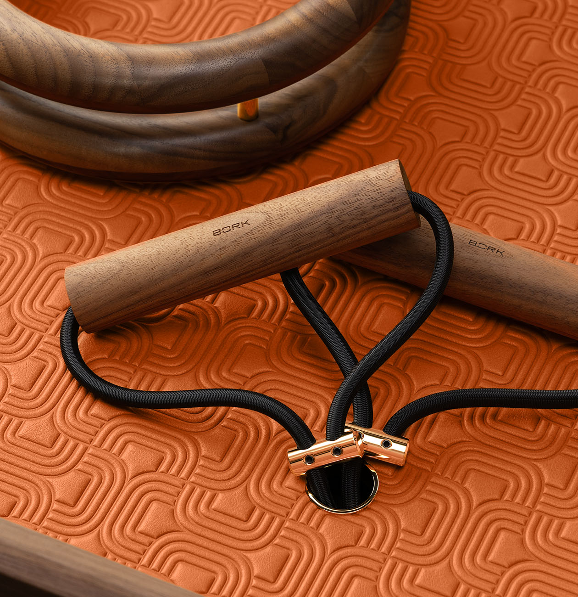
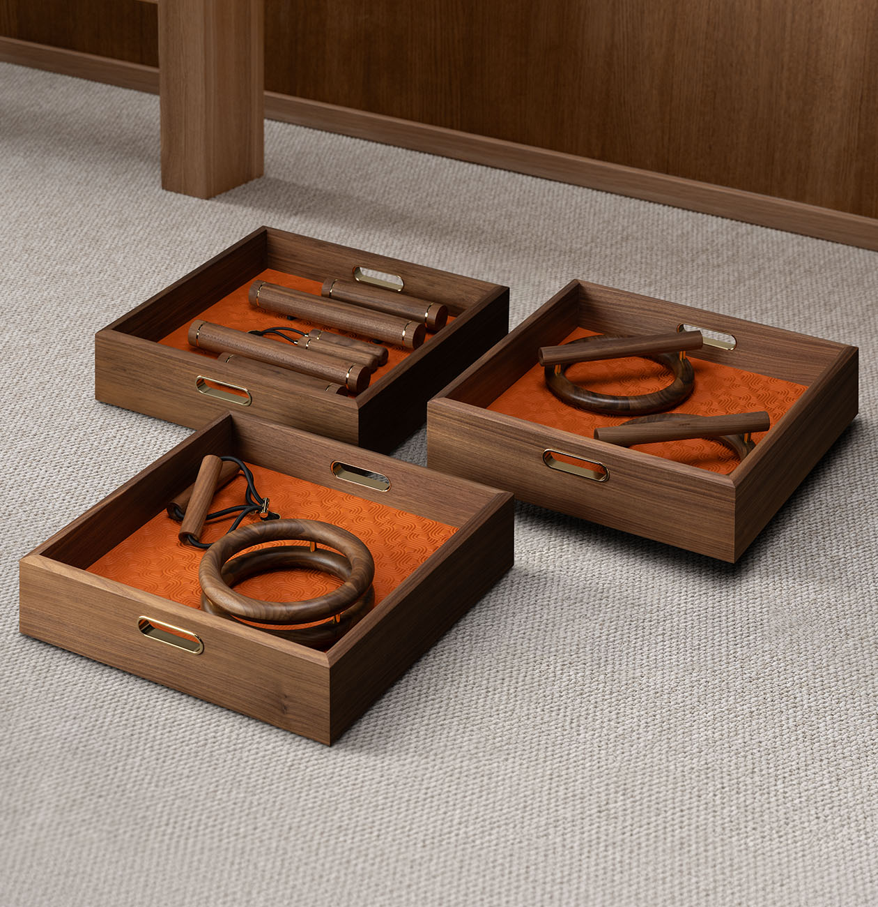
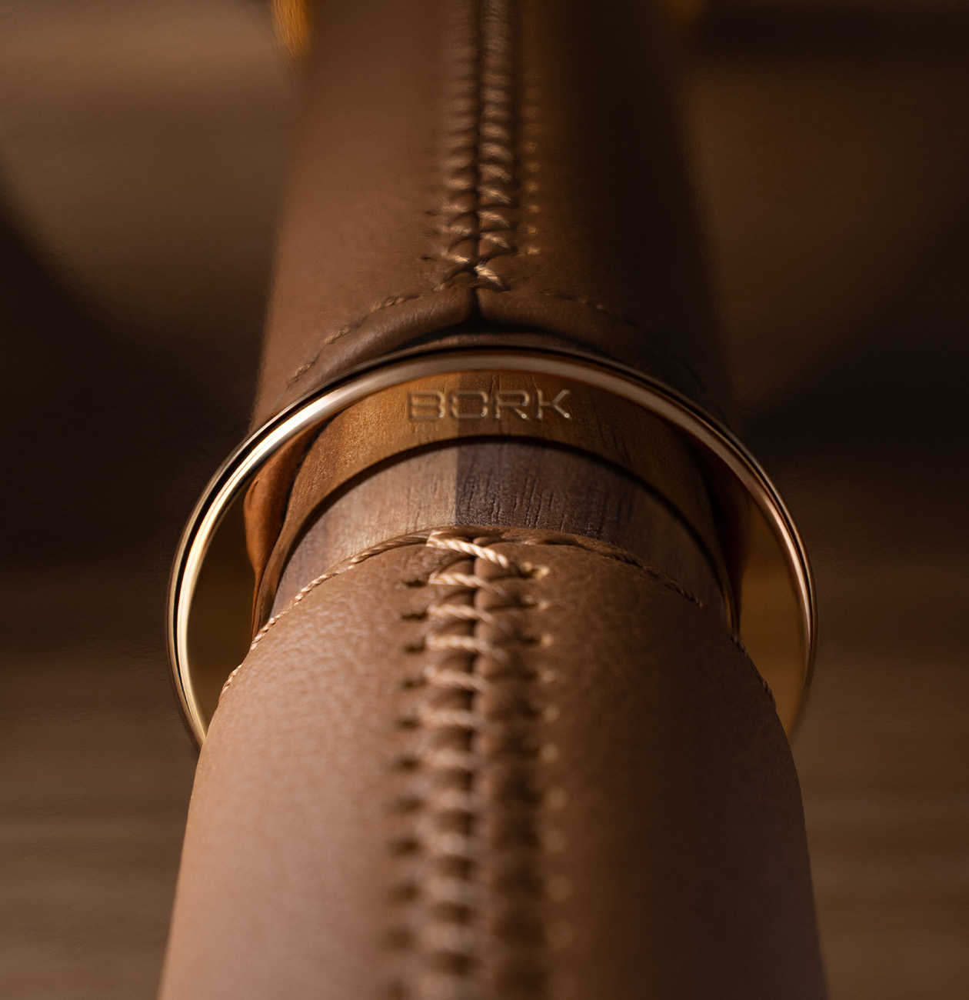
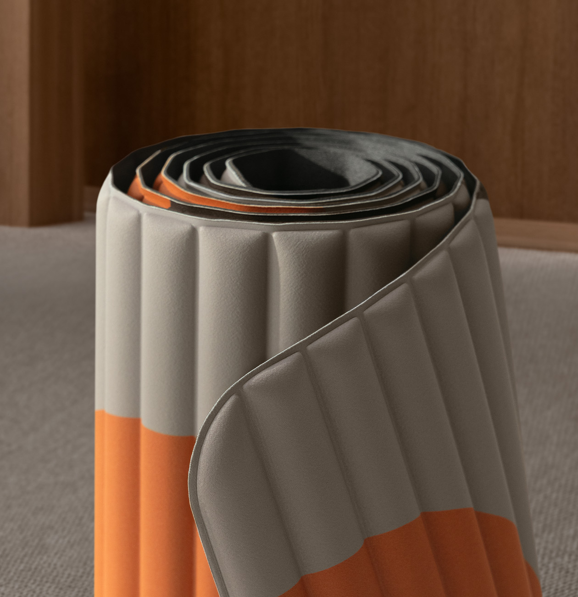

Карточка будущего проекта
Рабочая версия: требования автора, предлагаемая основа и открытые проверки.
Одно домашнее изделие с мебельной функцией: подготовить место, взять инвентарь, выполнить выбранные движения и вернуть пространство к бытовому использованию. Дети, молодые взрослые и пожилые пользуются им по очереди.
Для кого и для каких действий
| Группа | Основные движения | Что даёт изделие |
|---|
| Дети | Вытянуть противоположные руку и ногу; дотянуться до мягкого предмета; поднять таз лёжа. | Отдельная напольная панель, лёгкий предмет и цель. Свободное вытягивание; тяжёлое хранение отделено. |
| Молодые взрослые | Отжаться с коленей; присесть с гантелью; наклониться с гантелями. | Панель и свободные веса. Открытый подход, место кисти и возможность взять вес без переноса изделия. |
| Пожилые | Сесть и встать; поднять пятки у опоры; повернуть корпус сидя. | Подобранное неподвижное сиденье, стопы на полу и отдельный фиксированный хват на своей раме. |
Предлагаемая основа - четыре функции
Покрытие пола
Мягкий контакт ладони, колена и спины; хранится отдельно. Складка не попадает под основной контакт тела.
Сиденье
Постоянное либо жёстко зафиксированное после раскрытия. Подход перед стопами и место для рук остаются свободны.
Поддержка рукой
Фиксированный хват связан с силовой рамой. Дерево - контактная оболочка; не опираемся на магнит или трос.
Раздельное хранение
Гнёзда весов, лёгкая ячейка и место панели. Один предмет извлекается без перекладывания остальных.
Предлагаемый инвентарь
| Основа | Одна складная панель; мягкий лёгкий предмет и цель; гантель или пара по выбранным действиям. |
| Резерв | Лента для дополнительных движений после проверки. В прежней тяге сидя она удерживается стопами; силовой анкер не обязателен. |
| Пока не включаем | Экран, моторный привод, пружинную каретку, педали, ролик для пресса и скакалку: необходимость не выведена из девяти основных движений. |
Что уже задано автором
Установка без сверления: рабочую нагрузку принимает собственная рама и пол.
Минималистичный мебельный образ, видимая древесина и дорогой на вид аккуратный продукт. BORK подтверждён автором как эстетический ориентир.
Изображение человека показывает сценарий. Возраст допуска, самостоятельность подготовки, нагрузки и подходящие размеры ещё не определены.
Материалы, образ и качество
Дерево предпочтительно по пожеланию автора; конкретные материалы ещё сравниваются.

Древесина и акцент

Хранение как мебель

Стык и шов

Гибкая поверхность
На официальных страницах BORK указаны орех, кожа и латунь. На фото выше видим отделку и организацию хранения. Это эстетический ориентир; фотографии и заявления бренда не подтверждают долговечность нашего будущего изделия.
| Часть | Предлагаемая проработка | Что проверяем |
|---|
| Корпус и фасады | Фанера с натуральным шпоном ореха; массив - возможен локально. | Сравнить образцы кромки, шпон/массив, влагу, ремонт и цену. Вид дерева не задаёт ресурс. |
| Силовая рама | Сталь с матовым покрытием; декоративные накладки отделены от силовых связей. | Сечение, крепёж, усталость, устойчивость пустого изделия и работа с открытым ящиком. |
| Хват | Стальной несущий сердечник; гладкая деревянная оболочка, доступный крепёж. | Реальный обхват, скольжение, стык, очистка и смена накладки. Один красивый хват не подходит всем автоматически. |
| Сиденье | Сменный мягкий модуль: основание, упругая пена, доступный чехол. | Посадка/вставание, жёсткость, сжатие, шов и разрешённая очистка; кожу сравнить с другими обивками. |
| Панель для пола | Гибкая закрытоячеистая пена со сменной/очищаемой контактной частью. | Сцепление с конкретным полом, толщина, стыки и контакт тела. Не делать коврик жёсткими деревянными плитами. |
| Гнёзда и опоры | Сменные вкладыши, противоскользящие подпятники, ограничители хода. | Гантель не выкатывается; кисть не зажимается; опоры не оставляют следов. Способ защиты от доступа ребёнка ещё выбрать. |
Что считаем качеством своего изделия: Проверенная устойчивость, понятный хват/доступ, ровная кромка без заноз, обслуживаемый крепёж, сменные контактные части и документированный материал.
Что ещё не определено: Выбор скамьи или шкафа, размеры людей/изделия, массы грузов, допустимые нагрузки, сорт древесины, обивка, механизм защиты весов, бюджет и стоимость изготовления.
Первый кандидат - скамья; шкаф - вариант для сравнения. Эскизы не в масштабе. Сечение рамы, размеры, нагрузки и полная стоимость здесь не назначены.
BORK HS844: материалы и хранение
BORK HS841: гантели и отделка
BORK HS830: панель и ремень